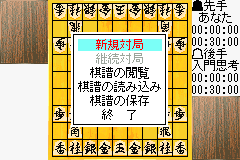

Morita Shougi Advance (Japan)
SRAM 256K gbakit Built-In 🎮 4P Link 🔌 Mobile Adapter GB (CGB-005)
Cartridge Identity
- Game Code
AMSJ(FamilyAMS)- Header Title
MORITASHOGI- Maker / Revision
18/ rev0- ROM Size
- 4.0 MiB (4,194,304 B)
- Save Media
SRAM 256K- SHA-256
273b390c92cd1436a240d8661fef0794e1403d3d245f78233c03ad46056d9ad3
Screenshots

Niche & Rare Accessories
Detected niche/rare GBA accessory support: 🔌 Mobile Adapter GB (CGB-005).
Full 343-ROM corpus breakdown in the Cartridge Hardware & Niche Accessories Reference · auto-detected from ROM bytes via
gbakit inspect.
- Mobile Adapter GB (CGB-005)
- Mobile System GB HTTP/1.0 + SMTP/POP3 stack
Link Cable & Multiplayer Communications
This title contains detected communication capabilities: 🎮 4P Link.
Detailed protocol specifications, SIO registers, Joybus commands, and MultiBoot sequences are documented in the Link & Multiplayer Reference.
- Multi-Player SIO (4P)
- 16-bit ring network · SIOCNT (
0x04000128) literals:0x000504,0x000534,0x00090c· SIODATA32/SIOMULTI0 (0x04000120) literals:0x0009bc,0x000b1c,0x000d0c
Battery Save Support in gbakit
Built-in definition (AMSJ)
gbakit save verify AMSJ save.sav
gbakit save decode AMSJ save.sav
gbakit save fix AMSJ damaged.sav -o repaired.savAsset Map (formatkit.asset-map.v1)
Download AMSJ-r0-273b390c92cd1436.asset-map.json.gz (24,890 B (24.3 KiB)) Verified PASS · 51.08% coverage
| Metric | Bytes / Value | Entries |
|---|---|---|
| Identified | 81,940 B (80.0 KiB) (1.95%) | 186 |
| Mapped | 0 B (0.00%) | 0 |
| Opaque | 2,060,388 B (1.96 MiB) (49.12%) | 1 |
| Unknown | 2,051,976 B (1.96 MiB) (48.92%) | 181 |
| Total ROM Size | 4,194,304 B (4.00 MiB) | 368 |
| Coverage % | 51.08% | — |
| Entries w/ Code Refs | 193 / 368 (52.45%) | — |
Top Identified Formats: rom.multiboot (1 · 64,932 B (63.4 KiB)) · gfx.gba-palette (183 · 15,936 B (15.6 KiB)) · audio.m4a-song-table (1 · 880 B) · gba.rom-header (1 · 192 B)
Largest unknown Extents (Headerless / Custom Asset Candidates)
| Offset | Size | Shannon Entropy | Code Refs |
|---|---|---|---|
0x0011B7B4 | 333,888 B (326.1 KiB) | 6.689 bits/B | 0 |
0x00195C8C | 189,556 B (185.1 KiB) | 5.588 bits/B | 0 |
0x001029D8 | 101,820 B (99.4 KiB) | 6.494 bits/B | 0 |
0x001C4120 | 98,100 B (95.8 KiB) | 7.022 bits/B | 0 |
0x000ED2CC | 83,000 B (81.1 KiB) | 6.731 bits/B | 0 |
gzip -dk AMSJ-r0-273b390c92cd1436.asset-map.json.gz && gbakit map verify rom.gba AMSJ-r0-273b390c92cd1436.asset-map.json
gbakit assets export rom.gba --asset-map AMSJ-r0-273b390c92cd1436.asset-map.json -o out/Text, Fonts & Scene Data
- Primary Text Encoding
- Shift-JIS (uncompressed) (
6ASCII strings ·200Shift-JIS runs) - Font & VWF Indicators
- No VWF Table 1bpp Font · BIOS SWIs: BitUnPack
0x10:2· LZ770x11/12:1· Huffman0x13:2· RLE0x14/15:2 - Scene & Packaging
16ROM pointer tables (≥32 entries,0≥200) ·1relativeu32TOCs ·66OAM metasprite hits
Password System
- Save Media
- Battery-Backed (SRAM)
- Password Class
- Password UI Strings Detected (
password_ui_strings_only)
Hardware MMIO Subsystems
save_bus_sram_flash0x800920c